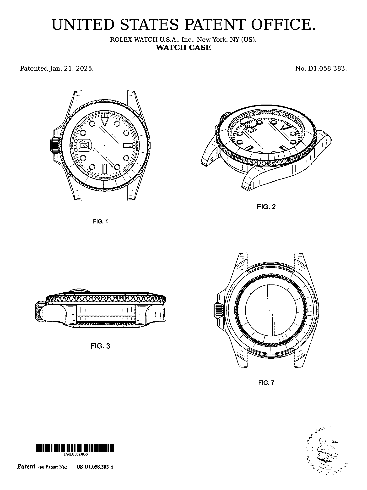
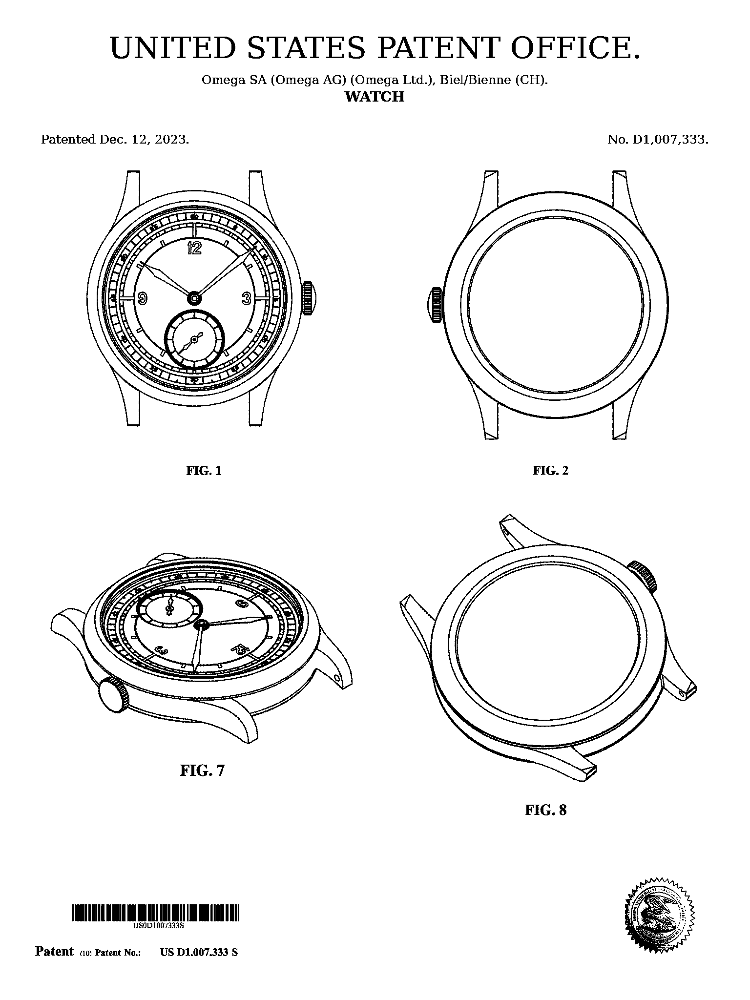

The inventions behind
the watches we remember.
Original patent drawings, researched and presented as objects of design history. Built to be read, discussed—and lived with.

The story is what makes it yours.
We do not think of patents as paperwork. At their best, they are portraits of an idea before it became familiar.
Objects worth knowing.
Browse by the way you collect: maker, technology, era or the story you want the room to tell.
A wall can make an argument.
Some patents become more meaningful beside one another. These sets are composed around turning points, shared design ideas and chapters in watchmaking history.

A watch becomes more compelling when its origin is visible.
The archive connects finished patent artwork to the maker, model family, protected design, and moment in watchmaking history.
Every work is grounded in a verified patent record and presented with the context needed to explain what is on the wall.
Give the object its origin story.
Selected watches paired with a patent work or small collection that makes the watch more interesting to own—and much more interesting to give.
The archive after it leaves us.
A collection changes when it enters a home, office, studio or workshop. Share yours and tell us why you chose it.